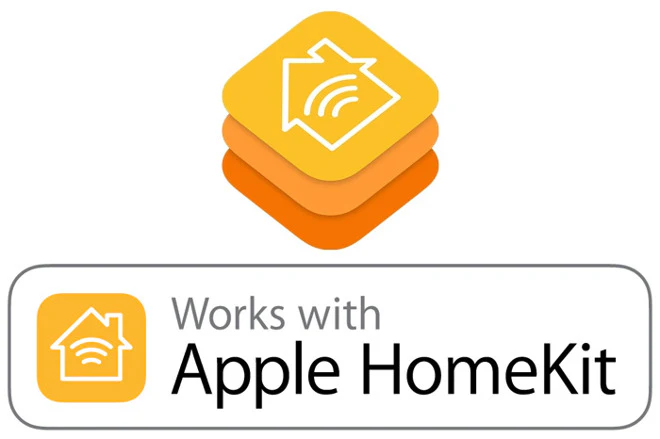

Are Kasa Smart Plugs Compatible with Apple HomeKit?
Smart home devices are becoming more popular every day, and TP-Link's Kasa Smart products are among the top choices for those wanting affordable and reliable smart gadgets. If you're an Apple HomeKit user wondering whether Kasa Smart Plugs and devices are compatible, you’ve come to the right place. In this blog, we’ll dive into Kasa’s compatibility with HomeKit, what devices work with it, and how you can integrate them into your smart home setup.
What Are Kasa Smart Devices?
Kasa Smart Devices, created by TP-Link, are designed to make your life easier. They allow you to control appliances, lights, and more from anywhere using a smartphone app or voice commands via Alexa, Google Assistant, or Apple HomeKit. The Kasa lineup includes smart plugs, light switches, cameras, and dimmers—all aimed at bringing convenience and energy savings to your home.
Are Kasa Smart Devices Compatible with Apple HomeKit?
Yes, several Kasa Smart devices are compatible with Apple HomeKit! While not every Kasa device works with HomeKit, TP-Link has expanded its lineup to include multiple HomeKit-supported devices, making them an excellent choice for Apple users. These devices can be controlled through the Apple Home app or Siri, offering seamless integration with your existing Apple ecosystem.
List of Kasa Devices Compatible with HomeKit
1. Smart Plugs
- KP125 Plug Mini – A compact indoor smart plug with energy monitoring and HomeKit compatibility.
- EP25 Plug Mini with Energy Monitoring – A budget-friendly plug for managing and tracking energy usage.
- EP40A Outdoor Smart Plug – A weather-resistant plug with two sockets, ideal for outdoor setups like string lights and garden equipment.
2. Smart Light Switches
- KS200 Smart Light Switch – A sleek switch that allows you to control your lights with Siri or the Apple Home app.
- KS220 Smart Dimmer Switch – Perfect for dimming your lights to create the ideal ambiance.
- KS240 Ceiling Fan Control & Dimmer Switch – A two-in-one switch for ceiling fan and light control.
Why Is HomeKit Compatibility Important?
Apple HomeKit provides a simple, secure, and user-friendly way to control smart home devices. By integrating Kasa Smart Devices with HomeKit, you can manage everything from one app or use voice commands via Siri. HomeKit also allows for advanced automation, like scheduling lights to turn on when you arrive home or shutting off appliances when you leave.
With Kasa’s HomeKit-compatible devices, you get a cost-effective way to bring smart home functionality to your Apple ecosystem.
How to Connect Kasa Smart Devices to HomeKit
Using the Apple Home App:
- Ensure compatibility: Make sure your Kasa device supports HomeKit and is powered on.
- Install the Home app: Download the latest version of the Apple Home app on your iPhone or iPad.
- Add the device: Open the app, tap the + icon, and select Add/Scan Accessory.
- Scan the QR code: Find the HomeKit code printed on your device or its packaging and scan it using your phone. (If scanning doesn’t work, you can manually enter the code.)
- Name and assign rooms: Once connected, give the device a name (e.g., “Living Room Lamp”) and assign it to a specific room in your home.
- Customize scenes: Set up automation and scenes, like “Good Morning” or “Movie Time,” to simplify your routines.
What Makes Kasa Devices Great for HomeKit Users?
- Affordable Options: Kasa devices are known for their competitive pricing, like the KP125 Plug Mini and EP25 Plug Mini, which offer excellent value compared to pricier alternatives.
- Energy Monitoring: Several devices, like the KP125 and EP25 plugs, allow you to track energy usage in real-time to help save on electricity bills.
- Weather Resistance: The EP40A Outdoor Smart Plug is IP64-rated, making it durable for outdoor use.
- Compact Design: Kasa Smart Plugs are designed to fit into outlets without blocking the second socket, saving space.
- Automation and Scenes: With Kasa and HomeKit, you can set schedules, create scenes, and automate devices for a smarter home experience.
FAQs About Kasa Smart Devices and HomeKit
1. Which Kasa Smart Plugs Work with Apple HomeKit?
The following Kasa plugs are HomeKit-compatible:
- KP125 Plug Mini
- EP25 Plug Mini with Energy Monitoring
- EP40A Outdoor Smart Plug
- KS200 Smart Light Switch
- KS220 Kasa Apple HomeKit Smart Dimmer Switch
- KS240 Kasa Smart Ceiling Fan Control & Dimmer Switch
2. Can I Use Kasa Smart Devices Without HomeKit?
Absolutely! Kasa devices are versatile and also work with Amazon Alexa, Google Assistant, and the Kasa app.
3. What Is Energy Monitoring, and Why Is It Useful?
Energy monitoring lets you track power consumption in real-time, helping you identify energy-heavy devices and reduce bills.
4. How Do I Find the HomeKit QR Code on My Kasa Device?
- Plugs: The QR code is printed on the device.
- Switches: The code is usually on the front panel or inside the packaging.
- Outdoor Plugs: Look for the code on the device’s body or packaging.
5. Are Kasa Devices Safe to Use?
Yes, Kasa devices are UL-certified, meeting strict safety standards. Always buy from trusted retailers for authenticity.
If you have a Kasa brand smart device, would you like to try a complementary app that generates amazing charts? If so, download the Watt for Smart Devices app.